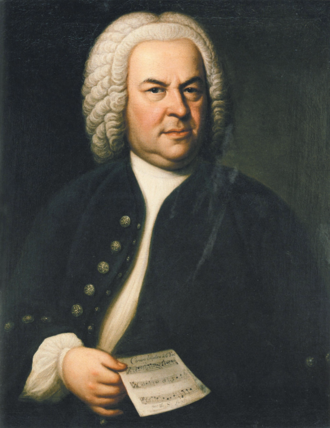

人物介紹
沃爾夫岡·阿馬德烏斯·莫札特
（德語：Wolfgang Amadeus Mozart，1756年1月27日－1791年12月5日）

路德維希·范·貝多芬
（德語：Ludwig van Beethoven；1770年12月16日－1827年3月26日）

約翰·塞巴斯蒂安·巴哈
（德語：Johann Sebastian Bach，1685年3月31日［儒略曆3月21日］－1750年7月28日）

法蘭茲·約瑟夫·海頓
（德語：Franz Joseph Haydn，1732年3月31日－1809年5月31日）